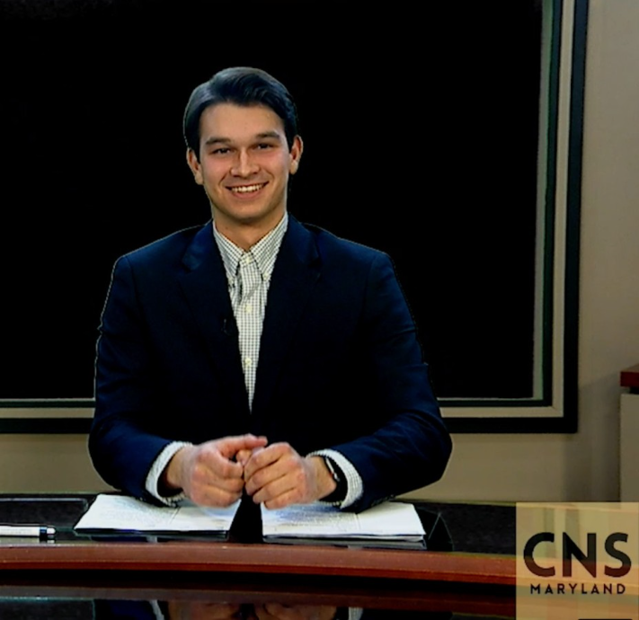

Jared Ochacher

Broadcast Journalism Student
Jared Ochacher is currently a broadcast journalism major and a Spanish minor at the University of Maryland. Ochacher has experience in broadcast journalism, media, and public speaking. He is a demonstrated responsible employee with excellent interpersonal skills.
Experience:
TikTok Campus Rep
Fuse Marketing
August 2020 - Present
- Communicated with, and led, others to launch a TikTok marketing campaign and create events for students at the University of Maryland. Learned innovative online marketing skills and participated in discussions with TikTok executives.
Assistant Aquatics Director
Camp Pinebrook
June 2020 - August 2020
- Supervised lifeguards, created schedules, and evaluated effectiveness of staff to maintain quality aquatic programs.
Housing Manager
Alpha Epsilon Pi
November 2019 - November 2020
- Ensured that AEPi’s chapter house followed the University of Maryland housing guidelines, and assisted in new property acquisitions. Helped to train the next executive board in leading the fraternity.
Swim instructor/lifeguard
JCC Mid-Westchester
January 2017- January 2020
- Led instructional swim classes for children and adults. Helped JCC management to come up with new business ideas and marketing strategies.
- WSI, Lifeguard, First Aid, CPR, Mental Health First Aid certified
Education:
- Bachelor of Arts, Broadcast Journalism, Minor in Spanish, University of Maryland, College Park, 2022
Skills:
- Proficient Spanish speaker as a second language
- Experienced leader in various roles
- Comfortable and persuasive public speaker
- Team player who works well with others